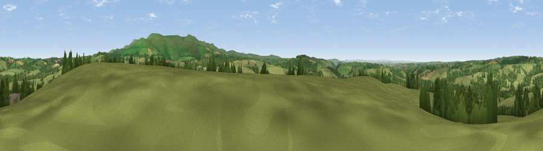

Viewpoint near Bridestowe
#19810 in England · top 33% of its area beats it · near BridestoweThe view, rendered

A 360° render of this exact spot computed from the terrain model, tree cover and land cover — summer colours, afternoon light, calibrated against photographs of famous viewpoints. Real trees, hedges and buildings will differ in detail.
The panorama
Grey silhouette: terrain skyline in each direction (720 bearings, Earth curvature and refraction included). Dashed green: skyline with trees (+15 m) and buildings (+8 m) as obstacles. Blue strip: how far the ground is visible on each bearing.
Where the view opens
Wedge length = distance to the farthest visible ground on that bearing (vegetation-aware). Rings at 10, 25 and 50 km.
What fills the view
80% grassland · 18% woodland ·
Angular shares of the visible panorama (visual magnitude), not map area. Landscape diversity 0.25 (0–1 Shannon).
Key numbers
More beautiful places nearby
The staircase of upgrades: each row has a higher view potential than everything closer. Driving times are estimates from straight-line distance, calibrated against real road routing — check an actual route before setting out.
| Place | Direction | Drive | Score |
|---|---|---|---|
| Viewpoint near Sourton | ENE · 3 km | ~8 min | 53.6 |
| Sourton Tors | E · 4 km | ~9 min | 74.8 |
| Viewpoint near Sourton | E · 5 km | ~11 min | 75.7 |
| Great Links Tor | ESE · 6 km | ~12 min | 77.8 |
| Yes Tor | E · 8 km | ~16 min | 78.5 |
| Viewpoint near Dousland | SSE · 21 km | ~35 min | 81.0 |
| Viewpoint near Lee Moor | SSE · 28 km | ~44 min | 82.7 |
| Viewpoint near Bucks Mills | NNW · 36 km | ~54 min | 84.0 |
50.69102, -4.12040 · source: screening · position refined by local search. Computed location — check access rights before visiting.